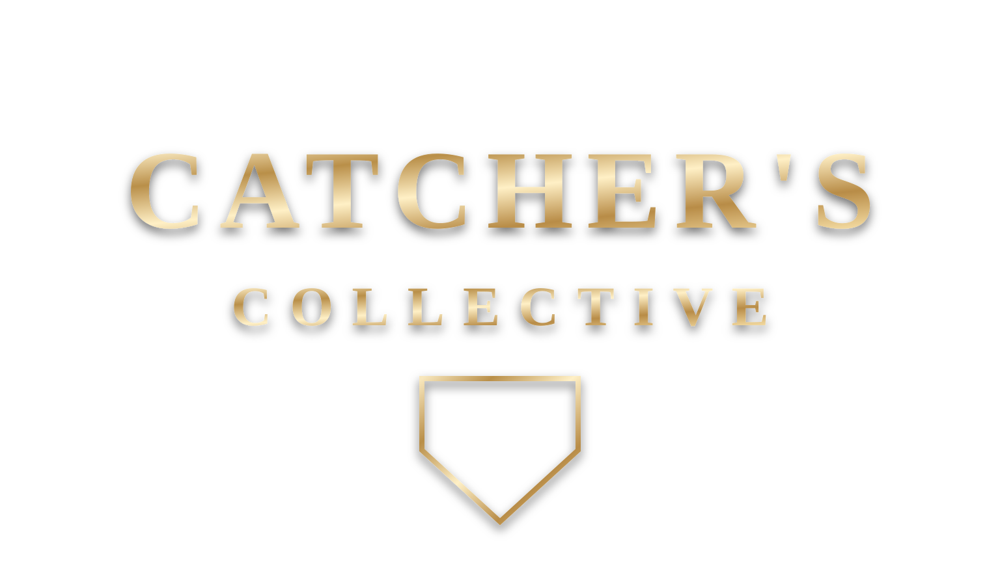

1:1 Training with Josh
- Any pillar training available for 60 minutes
- Video recap from OnForm after the completed session
- Best for focused 1:1 instruction, skill correction, and development planning

The Catcher's Collective
Catcher training built from Josh Crouch's junior college, Division I, and professional baseball experience, with age-range programs from youth through college baseball.
The Catcher's Collective is expanding beyond local lessons into a structured online academy. Families will be able to choose the right age-range program, follow Josh's catcher development framework, and pair the coursework with private training, video review, or recruiting support when they need a higher-touch path.
Program paths
Private lesson options
Development pillars

The foundation of catching. Quiet hands, pitch presentation, umpire relationships, and stealing strikes at every level.
See programs ↗
Keeping the ball in front. Body position, reaction drills, recovery, and protecting runners from advancing.
See programs ↗
Pop time, exchange mechanics, footwork patterns, arm path, and accuracy for every throw a catcher has to make.
See programs ↗
Calling pitches, sequencing, reading hitters, managing counts, and adjusting a game plan on the fly.
See programs ↗
Being the field general. Pitcher relationships, communication, composure under pressure, and leading by example.
See programs ↗
Catcher-specific strength, hip mobility, flexibility, agility, and injury prevention built for the demands of the position.
See programs ↗Coach Josh
Josh Crouch is a professional catcher drafted by Detroit in 2021 out of UCF. MiLB lists him as a 2022 Midwest League Post-Season All-Star and 2022 MiLB.com Organization All-Star.
The Catcher's Collective turns that pro-ball experience into clear, repeatable coaching for players who want to grow locally or work with Josh remotely.

Career highlights
A look at the college and professional baseball experience behind The Catcher's Collective.
Training locations
Local players can use the academy as homework between lessons, clinics, and in-person skill work.
Travel and high school catchers get a clear age-range progression instead of random drills.
Remote players can start with a course, then add video review or virtual coaching when available.
Academy interest
Use this form to ask about the upcoming digital academy, private lesson options, video review, recruiting support, or the best course path for your athlete.